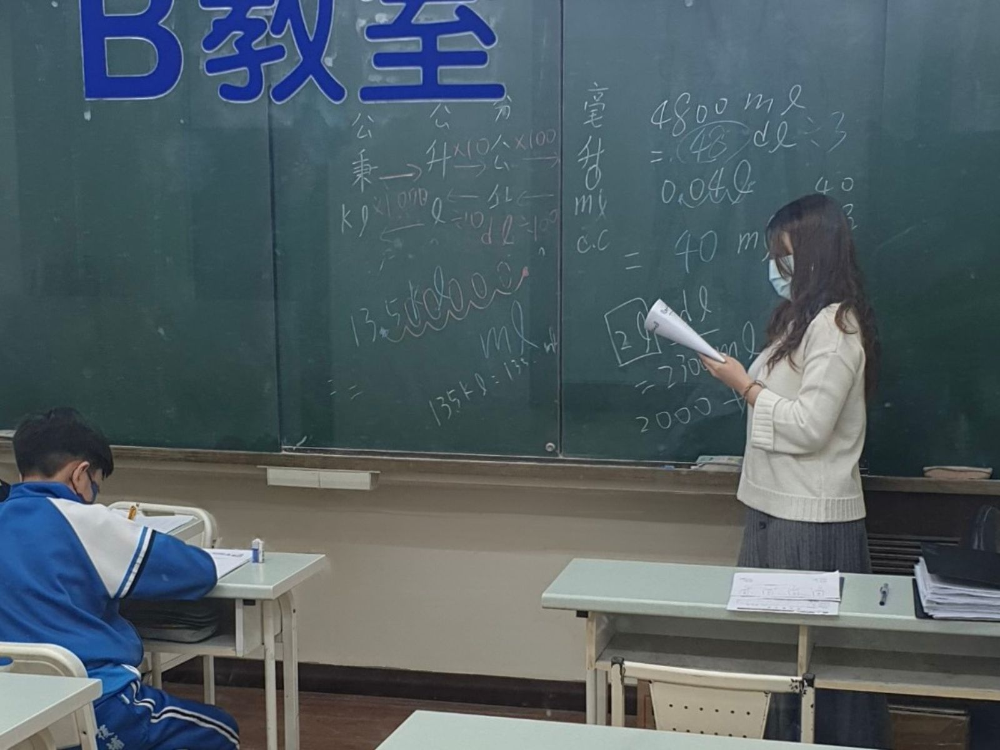
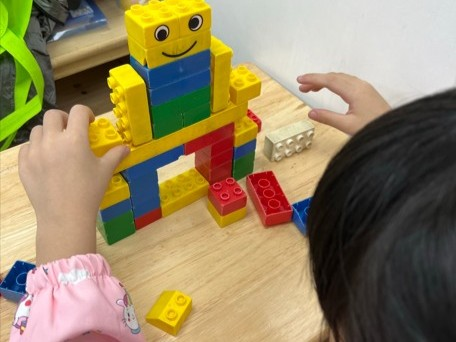
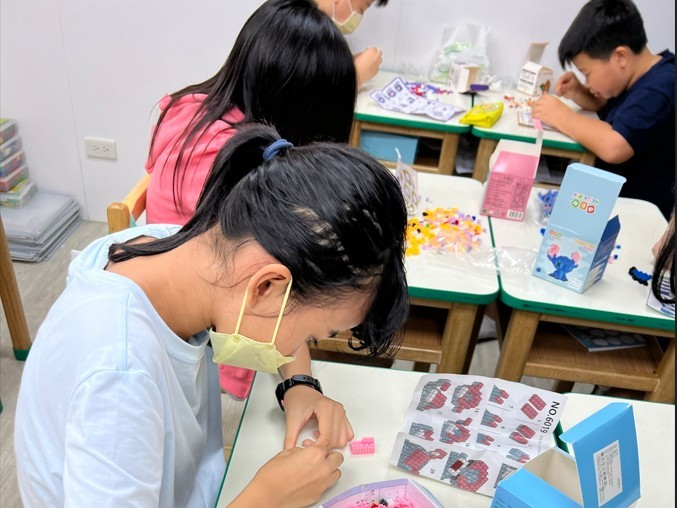
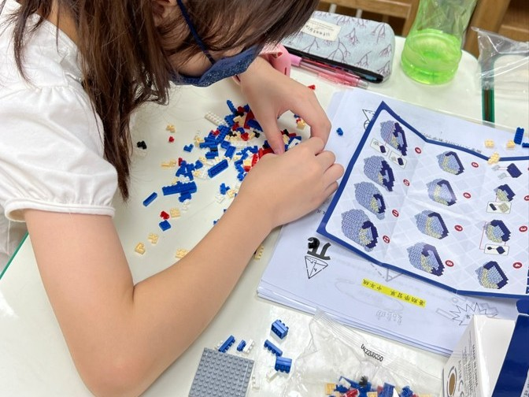
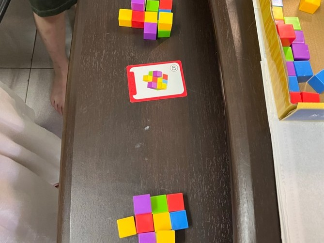
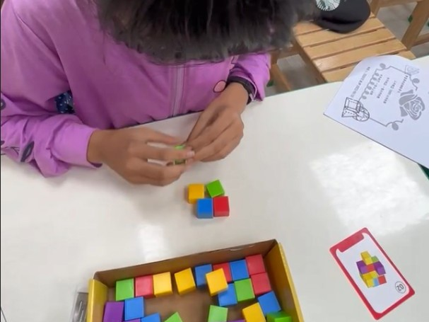
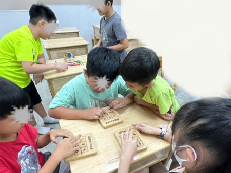
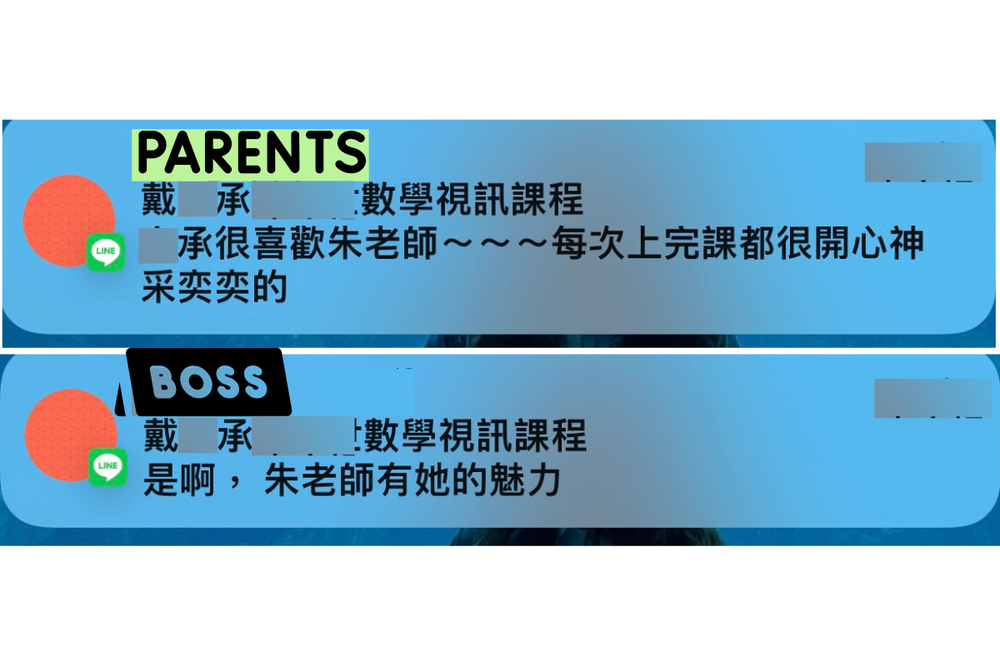

我是捷析老師，一位專職投入國小高年級到國中的數學老師。
多年來我陪了好多孩子走過「害怕 → 學得懂 → 甚至開始喜歡」的過程。

專注，是因為真的聽懂了。
堅持板書推導，不使用 PPT 快速帶過，一步步建立邏輯。
在捷析老師的課堂上，沒有謾罵與壓力，只有引導與思考。
我們重視每一個「為什麼」，鼓勵孩子提問，直到眼神從迷惘轉為堅定。
玩中學，是我們的日常。幾何不只是背公式，是拿在手裡的真實體驗。

用大積木堆出「笑臉小人」，從對稱、穩定到高度，一邊玩一邊聊數學語言。

透過拼豆圖卡練習座標與圖形拆解，讓耐心與專注一起長大。

從說明書一步步找出對應積木，像在解題：讀圖、找關鍵、照順序完成。

依照卡片排出指定形狀，訓練孩子的平面想像與邏輯推理。

彩色立體方塊讓孩子感受「一塊一塊堆出來」的空間結構，為日後立體圖形打基礎。

分組桌遊練習心算與反應速度，也學習輪流、討論與合作。
觀念可以重播，安心可以循環。就算缺課也不用擔心跟不上。
YouTube 頻道：捷析 JESSIE MATH
前往頻道觀看免費教學 →最客製、最靈活。適合需要長期雕琢基礎的孩子。
互動好、有同儕。適合程度相近的學生。
考前實戰規劃，重點觀念補強。

家長回饋
LINE 訊息「戴OO很喜歡朱老師～～每次上完課都很開心，神采奕奕的！」
班主任觀察
成效追蹤「流失率低，新生試上就續讀... 這次真的進步很多。」
教學評價
夥伴肯定「補習班對我的教課給予正面評價！希望能繼續調整配合。」